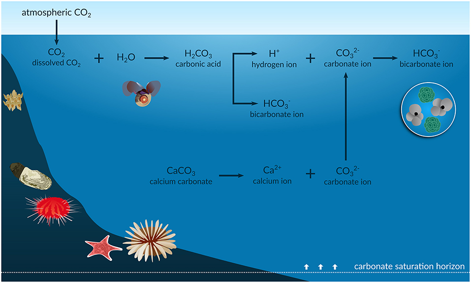

Calcite solubility in water, rainwater, and seawater
Contents
Calcite solubility in water, rainwater, and seawater#
Written by Svetlana Kyas (ETH Zurich) on Mar 30th, 2022
Studying the solubility of carbon dioxide in rainwater is important for understanding climate change. Anthropogenic CO2 absorbed by the oceans increases the concentration of hydrogen ions (H+), and thus its acidification. In a review article by Figuerola et al., A Review and Meta-Analysis of Potential Impacts of Ocean Acidification on Marine Calcifiers From the Southern Ocean, Front. Mar. Sci., 2021, ocean acidification (OA) (accompanied by CO reduction, see figure below) is identified as a critical problem for the shells and skeletons of marine calcifiers such as foraminifera, corals, echinoderms, mollusks, and bryozoans. The OA process reduces the carbonate saturation horizon (the depth below which calcium carbonate dissolves), which likely increases the vulnerability of many resident marine calcifiers to dissolution. In addition, ocean warming could further exacerbate the effects of the OA process on these particular species. For this reason, understanding the dependence of calcite solubility on various factors is an important issue in modeling.
In this tutorial, we examine the solubility of calcite in water, rainwater, and seawater. We also look at how it is affected by changes in temperature, pressure and the amount of carbon dioxide dissolved.
 |
|---|
Infographic of the ocean acidification process, Source: frontiersin.org |
First, we initialize the chemical system with aqueous, gaseous, and calcite phases.
from reaktoro import *
# Create the database
db = SupcrtDatabase("supcrtbl")
# Create an aqueous phase automatically selecting all species with provided elements
aqueousphase = AqueousPhase(speciate("H O C Ca Mg K Cl Na S N"))
aqueousphase.setActivityModel(chain(
ActivityModelHKF(),
ActivityModelDrummond("CO2"),
))
# Create a gaseous phase
gaseousphase = GaseousPhase("CO2(g)")
gaseousphase.setActivityModel(ActivityModelPengRobinson())
# Create a mineral phase
mineral = MineralPhase("Calcite")
# Create the chemical system
system = ChemicalSystem(db, aqueousphase, gaseousphase, mineral)
Next, the equilibrium specifications, equilibrium conditions, and equilibrium solver for the equilibrium calculations are initialized. To constrain the charge of the chemical state, we need to make it open to the Cl-. Finally, we create aqueous properties to evaluate pH in the forthcoming calculations.
# Define equilibrium specs
specs = EquilibriumSpecs (system)
specs.temperature()
specs.pressure()
specs.charge()
specs.openTo("Cl-")
# Define conditions to be satisfied at the chemical equilibrium state
conditions = EquilibriumConditions(specs)
conditions.charge(0.0, "mol") # to make sure the mixture is charge neutral
# Define the equilibrium solver
solver = EquilibriumSolver(specs)
# Define aqueous properties
aprops = AqueousProps(system)
The functions below define the chemical states corresponding to pure water, rainwater saturated with carbon dioxide, and seawater, respectively:
def water():
state = ChemicalState(system)
state.add("H2O(aq)", 1.0, "kg")
return state
def rainwater():
state = ChemicalState(system)
# Rainwater composition
state.set("H2O(aq)", 1.0, "kg")
state.set("Na+" , 2.05, "mg") # Sodium, 2.05 ppm = 2.05 mg/L ~ 2.05 mg/kgw
state.set("K+" , 0.35, "mg") # Potassium
state.set("Ca+2" , 1.42, "mg") # Calcium
state.set("Mg+2" , 0.39, "mg") # Magnesium
state.set("Cl-" , 3.47, "mg") # Chloride
state.set("SO4-2" , 2.19, "mg")
state.set("NO3-" , 0.27, "mg")
state.set("NH4+" , 0.41, "mg")
state.set("CO2(aq)", 0.36, "mol") # rainwater is saturated with CO2
return state
def seawater():
state = ChemicalState(system)
# Seawater composition
state.setTemperature(25, "celsius")
state.setPressure(1.0, "bar")
state.add("H2O(aq)", 1.0, "kg")
state.add("Ca+2" , 412.3, "mg")
state.add("Mg+2" , 1290.0, "mg")
state.add("Na+" , 10768.0, "mg")
state.add("K+" , 399.1, "mg")
state.add("Cl-" , 19353.0, "mg")
state.add("HCO3-" , 141.7, "mg")
state.add("SO4-2" , 2712.0, "mg")
return state
Solubility of calcite for different temperatures and pressures#
To calculate the solubility of calcite in a given brine, we define the function solubility_of_calcite(), which calculates the pH of the aqueous solution along with the amount of calcite dissolved in it. As the names suggest, the instances of pandas.DataFrame, i.e., df_water and df_rainwater, correspond to the results of chemical equilibrium calculations for water and rainwater, respectively.
import pandas as pd
df_water = pd.DataFrame(columns=["T", "P", "pH", "deltaCalcite"])
df_rainwater = pd.DataFrame(columns=["T", "P", "pH", "deltaCalcite"])
# Initial amount of calcite
n0Calcite = 10.0
def solubility_of_calcite(state, T, P, tag):
conditions.temperature(T, "celsius")
conditions.pressure(P, "bar")
# Equilibrate the solution with given initial chemical state and desired conditions at equilibrium
res = solver.solve(state, conditions)
# Check calculation succeeded
assert res.succeeded()
# Update aqueous properties
aprops.update(state)
# Fetch the amount of final calcite in the equilibrium state
nCalcite = float(state.speciesAmount("Calcite"))
if tag == "water":
df_water.loc[len(df_water)] = [T, P, float(aprops.pH()), n0Calcite - nCalcite]
elif tag == "rainwater":
df_rainwater.loc[len(df_rainwater)] = [T, P, float(aprops.pH()), n0Calcite - nCalcite]
Next, we initialize the array of temperatures from 20 °C till 90 °C and pressures P = 1, 10, 100 bars and perform solubility calculations for water and rainwater.
import numpy as np
temperatures = np.arange(20.0, 91.0, 5.0) # in celsius
pressures = np.array([1, 10, 100]) # in bar
state = water()
state.set("Calcite", n0Calcite, "mol")
[solubility_of_calcite(state, T, P, "water") for P in pressures for T in temperatures];
state = rainwater()
state.set("Calcite", n0Calcite, "mol")
[solubility_of_calcite(state, T, P, "rainwater") for P in pressures for T in temperatures];
Let us check that the calcite solubility determined for 25 °C and 1 bar actually corresponds to the values from Wikipedia, i.e., the solubility in water is 0.013 g/L (25 °C). In the following, we use 100.0869 g/mol as the molar mass of calcite:
# Fetch Calcite solubility for T = 25 celsius and P = 1 bar
deltaCalcite = df_water[(df_water['P']== 1.0) & (df_water['T'] == 25.0)]['deltaCalcite'].iloc[0]
print(f"Solubility of calcite in water equals to {1e3*deltaCalcite:.3f} "
f"mmol/kgw = ... = {deltaCalcite * 0.1000869 * 1e3:.3f} g/L")
Solubility of calcite in water equals to 0.116 mmol/kgw = ... = 0.012 g/L
In the case of pure water, therefore, about 0.116 mmol of calcite will dissolve. This dissolved quantity is independent of the initial quantity value used for calcite (provided it exceeds the solubility limit).
We plot using bokeh python library. We start from solubilities of calcite in water and CO2-saturated rainwater for pressure P = 1:
from bokeh.plotting import figure, show
from bokeh.io import output_notebook
output_notebook()
df_water_P1 = df_water[df_water['P'] == 1.0]
df_rainwater_P1 = df_rainwater[df_rainwater['P'] == 1.0]
p = figure(
title="COMPARISON OF CALCITE SOLUBILITY IN WATER AND RAINWATER",
x_axis_label=r'TEMPERATURE [°C]',
y_axis_label='CALCITE SOLUBILITY [MOL/KG]',
sizing_mode="scale_width",
plot_height=300)
p.line("T", "deltaCalcite", line_width=3, line_cap="round", line_color='indigo', source=df_water_P1)
p.line("T", "deltaCalcite", line_width=3, line_cap="round", line_color='darkred', source=df_rainwater_P1)
show(p)
From this plot, it can be seen that calcium carbonate has very low solubility in pure water, but higher solubility in rainwater saturated with carbon dioxide. This is due to the formation of more soluble calcium bicarbonate. The solubilities on different scales and for different pressures are shown below. It can be seen that with increasing pressure, the solubility of calcium carbonate increases.
from bokeh.models import HoverTool, Legend
from bokeh.plotting import gridplot
from bokeh.models import ColumnDataSource
colors = ['teal', 'darkred', 'indigo', 'coral']
# ----------------------------------- #
# Plot calcite solubility in water
# ----------------------------------- #
hovertool1 = HoverTool()
hovertool1.tooltips = [("delta(Calcite)", "@deltaCalcite mol"),
("P", "@P bar"),
("T", "@T °C")]
p1 = figure(
title="CALCITE SOLUBILITY IN WATER",
x_axis_label=r'TEMPERATURE [°C]',
y_axis_label='CALCITE SOLUBILITY [MOL/KG]',
sizing_mode="scale_width",
plot_height=300)
p1.add_tools(hovertool1)
for P, color in zip(pressures, colors):
df_water_P = ColumnDataSource(df_water[df_water['P'] == P])
p1.line("T", "deltaCalcite", legend_label=f'P = {P}', line_width=3, line_cap="round", line_color=color, source=df_water_P)
p1.legend.location = 'top_right'
# ----------------------------------- #
# Plot calcite solubility in rainwater
# ----------------------------------- #
hovertool2 = HoverTool()
hovertool2.tooltips = [("delta(Calcite)", "@deltaCalcite mol"),
("P", "@P bar"),
("T", "@T °C"),]
p2 = figure(
title="CALCITE SOLUBILITY IN RAINWATER",
x_axis_label=r'TEMPERATURE [°C]',
y_axis_label='CALCITE SOLUBILITY [MOL/KG]',
sizing_mode="scale_width",
plot_height=300)
p2.add_tools(hovertool2)
for P, color in zip(pressures, colors):
df_rainwater_P = ColumnDataSource(df_rainwater[df_water['P'] == P])
p2.line("T", "deltaCalcite", legend_label=f'P = {P}', line_width=3, line_cap="round", line_color=color, source=df_rainwater_P)
grid = gridplot([[p1], [p2]])
show(grid)
Solubility of calcite in the seawater with increasing levels of CO2#
Subsequent auxiliary variables are defined to store the initial amount of CO2 and its incremental amount in the calculation sequence. At each iteration of the following loop, CO2 is added to the seawater and the system is rebalanced.
The amount of carbon dioxide added and the corresponding pH value are recorded in a pandas.DataFrame.
co2_0 = 0.0
co2_delta = 2.0 # in mmol
nsteps = 50
df_seawater = pd.DataFrame(columns=["amountCO2", "pH", "deltaCalcite"])
T = 25
P = 1
for i in range(nsteps):
# Initial amount of calcite
n0Calcite = 10.0
conditions.temperature(T, "celsius")
conditions.pressure(P, "bar")
# Add more CO2 to the problem
state = seawater()
state.set("CO2(g)", co2_0, "mmol")
state.set("O2(aq)", 1.0e-9, "mol") # this small amount of O2(aq) is needed to avoid convergence failure in the computation below!
# Equilibrate the solution given by the chemical state and conditions
res = solver.solve(state, conditions)
# Check calculation succeeded
assert res.succeeded(), f"The calculation failed at step #{i}"
# Add `n0Calcite` amount of calcite
state.set("Calcite", n0Calcite, "mol")
# Equilibrate solution with added calcite
res = solver.solve(state, conditions)
# Check calculation succeeded
assert res.succeeded(), f"The calculation failed at step #{i}"
# Update aqueous properties
aprops.update(state)
# Fetch the amount of final calcite in the equilibrium state
nCalcite = float(state.speciesAmount("Calcite"))
# Update CO2 amount
co2_0 += co2_delta
# Append new calculated value to the dataframe
df_seawater.loc[len(df_seawater)] = [co2_0, float(aprops.pH()), n0Calcite - nCalcite]
To analyze the results obtained, the pH and calcite solubility are plotted as a function of the amount of CO2 added to the seawater.
hovertool1 = HoverTool()
hovertool1.tooltips = [("amount(CO2)", "@amountCO2 mmol"), ("pH", "@pH"), ("delta(Calcite)", "@deltaCalcite")]
p1 = figure(
title="PH DEPENDENCE ON AMOUNT OF ADDED CO2 TO THE SEAWATER",
x_axis_label=r'CO2 AMOUNT [MMOL]',
y_axis_label='PH [-]',
sizing_mode="scale_width",
plot_height=300)
p1.add_tools(hovertool1)
p1.line("amountCO2", "pH", line_width=3, line_cap="round", line_color='indigo', source=df_seawater)
p2 = figure(
title="THE EFFECT OF CO2 CONTENT IN SEAWATER ON CALCITE SOLUBILITY",
x_axis_label=r'CO2 AMOUNT [MMOL]',
y_axis_label='CALCITE SOLUBILITY [MOL]',
sizing_mode="scale_width",
plot_height=300)
p2.add_tools(hovertool1)
p2.line("amountCO2", "deltaCalcite", line_width=3, line_cap="round", line_color='coral', source=df_seawater)
grid = gridplot([[p1], [p2]])
show(grid)
Below 45 mmol CO2, the seawater becomes increasingly acidic with the addition of the gas, which increases the solubility of the calcite. However, once the saturation point is reached, no more gas can be dissolved in the seawater and the pH remains constant. The solubility of the calcite is also constant from this point on.